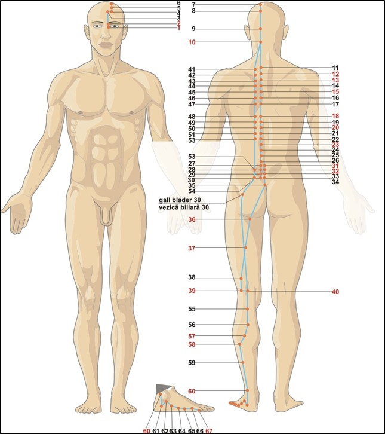

Fereastra eliminării și a echilibrului nervos
Vezica urinară atinge potențialul maxim între 15:00 – 17:00, momentul optim pentru eliminarea fluidelor reziduale și pentru reglarea tonusului nervos. Oboseala accentuată la această oră, durerile de spate sau senzația de tensiune în zona lombară indică un dezechilibru al meridianului.
Energie, ore & elemente asociate
☯Tip energetic
- Yang mare — Zu Taiyang (足太阳): Mai marele Yang al piciorului. Vezica urinară este cel mai exterior meridian Yang, protejând organismul și reglând eliminarea.
- Meridian pereche: Rinichiul (Zu Shaoyin 足少阴). Cuplul Apă: vezica elimină, rinichiul stochează. Împreună guvernează metabolismul apei și homeostazia.
- Spirit: Curajul, adaptabilitatea, capacitatea de a „curge” cu viața. Un BL armonios conferă siguranță, voință și capacitatea de a lua decizii clare.
- Organ de simț asociat: Urechea (auzul, echilibrul).
💧Element Apă (水) — Depozitarea și curgerea
- Direcție: Nord | Anotimp: Iarna
- Climat: Frigul | Culoare: Albastru / Negru
- Gust: Sărat | Sunet: Geamătul
- Emoție: Frica în dezechilibru; curajul, calmul în echilibru
- Țesuturi: Oasele, părul, dinții, măduva
- Funcții speciale: Vezica urinară stochează și elimină urina, iar ca meridian, influențează sistemul nervos autonom, coloana vertebrală și toate punctele Shu ale organelor.
🕐Ceasul organic — 24 h
- Înainte — Intestin Subțire (SI): 13:00–15:00. Absorbția nutrienților, pregătirea pentru eliminare.
- Vezica Urinară (BL): 15:00–17:00. Fereastra eliminării deșeurilor lichide. Momente optime pentru hidratare și pentru activități care solicită rezistență și claritate mentală.
- După — Rinichiul (KD): 17:00–19:00. Stocarea energiei și pregătirea pentru seară.
- Semnificație clinică: Durerile de spate între 15-17 = stagnare de Qi în BL. Senzația de frig sau urinările frecvente = deficit de Yang al vezicii urinare. Tensiunea nervoasă crescută după-amiaza = dezechilibru al sistemului autonom.
GB
LV
LU
LI
胃
脾
HT
SI
BL
KD
心包
SJ
Traseu & anatomie energetică

În depresiunea de la colțul intern al ochiului, 0.1 cun medial de canthus.
Urcă pe frunte, traversează creștetul și coboară pe ceafă.
Ramura internă (1.5 cun lateral de coloana vertebrală) și ramura externă (3 cun lateral).
Ramura internă trece prin punctele asociate plămânului, inimii, ficatului, vezicii biliare, stomacului, rinichilor etc.
Coboară pe fața posterioară a coapsei și gambei, trece în spatele maleolei externe.
Se termină la partea laterală a degetului mic de la picior. BL-67 este punctul clasic pentru poziția anormală a fătului.
🔗Conexiuni interne profunde
- Legătura cu creierul și ochii: BL-1 (Jingming) se conectează direct cu creierul. BL-10 (Tianzhu) și BL-2 au influență asupra vederii și a durerilor oculare.
- Ramura internă către rinichi și vezica urinară: De la regiunea lombară, o ramură profundă înfășoară rinichii în spirală, apoi coboară prin ureter la vezica urinară – explică relația strânsă dintre cele două organe.
- Punctele Shu (asociația organelor): BL-13→BL-28 sunt puncte de transport (Shu) pentru toate cele 12 organe. Acestea influențează direct funcțiile organelor prin nervii spinali.
- Conexiunea cu sistemul nervos autonom: Cele patru ramuri ale BL (două de fiecare parte) rulează de-a lungul coloanei vertebrale, influențând trunchiurile simpatic și parasimpatic.
Rol: „Ministerul rezervorului” — funcții fiziologice
🚰Stocarea și eliminarea urinei
Vezica urinară primește urina de la rinichi, o stochează și o elimină la momentul potrivit. Un BL armonios asigură urinare normală, fără incontinență sau retenție.
⚡Reglarea sistemului nervos autonom
Meridianul BL influențează direct trunchiurile simpatic și parasimpatic, care controlează funcțiile vitale (bătăi inimii, respirație, digestie). Stresul cronic și hiperactivitatea simpatică se manifestă ca tensiuni și dureri de-a lungul coloanei.
🦴Suportul coloanei vertebrale
De-a lungul coloanei, BL hrănește vertebrele, discurile intervertebrale și nervii spinali. Durerile de spate, sciatica și rigiditatea sunt semne de blocaj.
🛡️Protecția împotriva frigului și vântului
Fiind cel mai exterior meridian Yang, BL apără organismul de patogenii externi. Sensibilitatea la frig și durerile musculare indică o slăbire a BL.
🧠Influența asupra sănătății mintale
BL-62 (Shenmai) este punctul cheie al Yang Qiao Mai, influențând somnul și starea de veghe. BL-10, BL-23 tratează epilepsia, anxietatea și depresia.
👀Deschiderea în ochi
BL-1 și BL-2 tratează afecțiunile oculare: conjunctivită, durere oculară, lăcrimare excesivă, miopie.
Blocaje & indicații terapeutice
⚠️Tipare patologice principale
- Deficiență de Qi / Yang (hipofuncție): Urinare frecventă, incontinență, enurezis, senzație de frig la nivelul spatelui și membrelor, dureri de spate surde, oboseală, picioare reci, hemoroizi, frisoane, lăcrimare excesivă.
- Stagnare de Qi sau sânge în BL: Durere fixă în regiunea lombară, rigiditate cervicală, migrenă occipitală, durere în zona omoplatului, sciatică.
- Căldură umedă în BL (exces): Disurie, urină închisă la culoare, urinare dureroasă, senzație de arsură, cistită, prostatită, hemoroizi sângerânzi.
- Manifestări pe traiect: Durere în colțul intern al ochiului, cefalee occipitală, rigiditate a cefei, durere pe spate (paravertebral), durere în fosa poplitee, durere în călcâi, durere la nivelul degetului mic.
🏥Indicații terapeutice generale
- Urologice și nefrologice: Cistită, uretrită, infecții urinare recurente, enurezis, incontinență, retenție urinară, litiază renală (adjuvant).
- Musculo-scheletice: Lombalgie, sciatică, hernie de disc, spondiloză cervicală, durere în omoplat, durere de șold, durere de genunchi și călcâi.
- Neurologice și psihice: Cefalee occipitală, migrenă, epilepsie, vertij, insomnie, anxietate, depresie, stres cronic.
- ORL și oftalmologice: Congestie oculară, durere oculară, lăcrimare, fotofobie, sinuzită, rinită.
- Reproductive: Prostatită, dismenoree, menstruație neregulată, leucoree.
- Sistemul nervos autonom: Stres cronic, hiperactivitate simpatică, insomnie, oboseală cronică.
Vezica urinară — sediul fricii și al curajului
Meridianul vezicii urinare este strâns legat de răspunsul la stres și de capacitatea de a face față fricii. Un BL armonios oferă curaj, siguranță și capacitatea de a lua decizii clare. În dezechilibru, apar frica cronică, nesiguranța, timiditatea și sentimentul de a fi copleșit de viață. Prin legătura sa cu sistemul nervos autonom, BL influențează modul în care reacționăm la pericole și la schimbări.
Atribute psiho-emoționale ale Vezicii Urinare
✅Atribute pozitive — BL în armonie
- Curaj, voință puternică, siguranță de sine
- Capacitatea de a lua decizii clare, încredere în sine
- Adaptabilitate, flexibilitate în fața schimbărilor
- Rezistență fizică și mentală, echilibru emoțional
- Capacitatea de a „curge” cu viața, fără a te împotrivi
⚠️Atribute negative — BL dezechilibrat
- Nesiguranță, timiditate, lipsă de curaj
- Neseriozitate, delăsare, neglijență față de sine
- Hiperactivitate nervoasă, stres cronic, spaimă, groază
- Frică de frig, de noapte, de schimbări
- Iritabilitate, plângeri constante, lipsa senzației de milă
- În exces: rigiditate, intoleranță, cinism, încăpățânare
Manifestări psihice în funcție de tipul energetic
↓Deficiență de Qi / Yang — frică și insecuritate
Nesiguranță paralizantă, timiditate extremă, lipsă totală de curaj, neseriozitate cronică, delăsare profundă, hiperactivitate nervoasă incontrolabilă, stres sever, spaimă și groază constante. Neliniște, neglijență, nepasare, fricoșenie extremă, teamă de frig și de noapte. Persoana este sperioasă, mult prea sensibilă, se enervează repede, tot timpul se plânge. Lipsa capacității de a lua decizii clare.
↑Exces de Qi / căldură — stres și rigiditate
Stare de stres cronic, incapacitate de relaxare. Iritabil, cinic, neinteresat de punctul de vedere al altora, intolerant, încăpățânat. Probleme în relația de cuplu (gelozie, certuri). Sistem nervos autonom hiperactiv, agitație, insomnie, migrene, dureri de spate tensionale.
Dinamica arhetipală: Vezica Urinară & relația cu părinții
👪Relația cu principiul matern (Yin) — siguranța de bază
- Armonie: Capacitatea de a te simți în siguranță și protejat(ă) în lume. Încrederea că nevoile tale vor fi împlinite. Relație sănătoasă cu mama și cu propriul feminin interior.
- Dezechilibru ușor: Ușoară nesiguranță, nevoie de reasigurare. Dificultăți în a te simți complet în siguranță.
- Dezechilibru moderat: Dificultăți în a te simți susținut(ă) emoțional de figura maternă. Tendința de a reține frica sau de a te simți copleșit(ă) de emoțiile materne sau de lipsa de suport.
- Dezechilibru sever: Traumă legată de abandon, neglijență sau respingere maternă. Incapacitate cronică de a te simți în siguranță în lume. Teamă paralizantă de a fi vulnerabil(ă).
Instrument de evaluare a meridianului Vezicii Urinare
Glisați pe bara colorată sau utilizați meniul dropdown pentru a selecta starea energetică. Profilul complet — fiziologic, nutrițional, emoțional și terapeutic — se afișează imediat. Corelați cu măsurătorile de biorezonanță și cu istoricul de stres, dureri de spate, frici și tulburări urinare.
Evaluare energetică — Meridian Vezică Urinară (BL)
Selectați nivelul observat: glisați pe bară, trageți indicatorul sau utilizați meniul.
Meridianul Vezicii Urinare (Zu Taiyang) — 67 puncte BL
Tabel complet cu localizare de precizie, categorii energetice, funcții principale și indicații terapeutice detaliate pentru toate punctele.
| Punct | Localizare | Categorie | Funcții principale | Indicații detaliate |
|---|---|---|---|---|
| BL 1 Jingming 睛明 | În depresiunea deasupra canthusului medial, 0.1 cun medial de unghiul intern al ochiului, între globul ocular și osul nazal. | Intersecție (VB, VS, IG, Yang Qiao, Yin Qiao) |
| Dacriocistită, vedere încețoșată, fotofobie, lăcrimare, glaucom, cataractă incipientă, congestie oculară, cefalee frontală, strabism, orbire de noapte. |
| BL 2 Cuanzhu 攒竹 | La marginea medială a sprâncenei, în incizura supraorbitală. | Punct local |
| Cefalee frontală, nevralgie trigemen, miozită a sprâncenei, conjunctivită, lăcrimare excesivă, ptoză, congestie nazală, edem al pleoapelor. |
| BL 3 Meichong 眉冲 | 0.5 cun deasupra liniei anterioare de păr, 1.5 cun lateral de linia mediană anterioară, direct superior de BL2. | Intersecție (VB și Yang Wei Mai) |
| Epilepsie, vertij, cefalee severă, migrenă, congestie nazală, anxietate psiho-motorie, amețeală. |
| BL 4 Qucha 曲差 | 0.5 cun deasupra liniei anterioare de păr, 1.5 cun lateral de mediană, la o treime între Shenting și Touwei. | Punct local |
| Cefalee, vedere încețoșată, epistaxis, rinită alergică, fobie la vânt, nevralgie occipitală, congestie nazală. |
| BL 5 Wuchu 五处 | 1 cun deasupra liniei anterioare de păr, 1.5 cun lateral de mediană, pe linia mediană a pupilei. | Punct local |
| Vertij, amețeală, cefalee tensională, insomnie, agitație psihică, convulsii infantile, tulburări de memorie. |
| BL 6 Chengguang 承光 | 2.5 cun deasupra liniei anterioare de păr, 1.5 cun lateral de mediană. | Punct local |
| Durere de cap, amețeală, congestie nazală, vedere cețoasă, nevrite optice, fotofobie. |
| BL 7 Tongtian 通天 | 4 cun deasupra liniei anterioare de păr, 1.5 cun lateral de mediană. | Punct important pentru nas |
| Sinuzită, rinoree, anosmie, epistaxis, cefalee frontală, polipi nazali, rinită atrofică. |
| BL 8 Luoque 络却 | 5.5 cun deasupra liniei anterioare de păr, 1.5 cun lateral de mediană. | Punct de colateral |
| Tinitus, hipoacuzie, vertij, cefalee, vedere încețoșată, insomnie, acufene. |
| BL 9 Yuzhen 玉枕 | 2.5 cun deasupra liniei posterioare de păr, 1.3 cun lateral de linia mediană posterioară, sub protuberanța occipitală externă. | Punct local |
| Cefalee occipitală, rigiditate cervicală, dureri oculare, glaucom, lacrimare, vertij, strabism. |
| BL 10 Tianzhu 天柱 | În depresiunea de la marginea laterală a mușchiului trapez, 1.3 cun lateral de linia mediană posterioară, 0.5 cun deasupra liniei posterioare de păr. | Intersecție Yang Wei |
| Torticolis, cefalee occipitală, glaucom, nevralgie occipitală, manie, insomnie, amigdalită, răgușeală, hipertensiune. |
| BL 11 Dazhu 大杼 | 1.5 cun lateral de marginea inferioară a apofizei spinoase T1 (la nivelul T1-T2). | Întâlnire Yang Qiao Mai, punctul oaselor |
| Febră, cefalee, rigiditate a spatelui superior, artroză cervicală, dureri costale, tuse, astm bronșic, spondiloză. |
| BL 12 Fengmen 风门 | 1.5 cun lateral de marginea inferioară a apofizei spinoase T2. | Punct de transfer, elimină vântul extern |
| Răceală comună, gripă, tuse, urticarie, eczeme, mialgii cervicale, congestie nazală, fobie la vânt. |
| BL 13 Feishu 肺俞 | 1.5 cun lateral de apofiza spinoasă T3. | Shu-Dorsal al Plămânului |
| Astm bronșic, bronșită cronică, tuse convulsivă, transpirații nocturne, piele uscată, faringită cronică, răgușeală. |
| BL 14 Jueyinshu 厥阴俞 | 1.5 cun lateral de apofiza spinoasă T4. | Shu-Dorsal al Pericardului |
| Angor pectoral, palpitații, dureri precordiale, tuse, dificultăți în respirație, anxietate toracică, nervozitate. |
| BL 15 Xinshu 心俞 | 1.5 cun lateral de apofiza spinoasă T5. | Shu-Dorsal al Inimii |
| Insomnie, memorie slabă, anxietate, transpirații nocturne, coșmaruri, boli coronariene, palpitații, amnezie. |
| BL 16 Dushu 督俞 | 1.5 cun lateral de apofiza spinoasă T6. | Punct de reglare a vasului guvernator |
| Febră intermitentă, senzație de căldură și frig, durere retrosternală, astm cardiac, tulburări de ritm. |
| BL 17 Geshu 膈俞 | 1.5 cun lateral de apofiza spinoasă T7. | Punctul de influență a sângelui, punctul de întâlnire a sângelui |
| Hematemeză, hemoptizie, epistaxis, anemii cronice, vărsături, sughiț, dermatite cronice, eczeme, psoriazis. |
| BL 18 Ganshu 肝俞 | 1.5 cun lateral de apofiza spinoasă T9. | Shu-Dorsal al Ficatului |
| Icter, durere în hipocondru, vedere încețoșată, migrenă, orbire de noapte, hipertensiune, insomnie, depresie. |
| BL 19 Danshu 胆俞 | 1.5 cun lateral de apofiza spinoasă T10. | Shu-Dorsal al Vezicii Biliare |
| Icter, gust amar, colecistită, durere în hipocondru, febră intermitentă, grețuri, vărsături biliare. |
| BL 20 Pishu 脾俞 | 1.5 cun lateral de apofiza spinoasă T11. | Shu-Dorsal al Splinei |
| Distensie abdominală, diaree cronică, scădere în greutate, edeme, oboseală, prolaps visceral, inapetență. |
| BL 21 Weishu 胃俞 | 1.5 cun lateral de apofiza spinoasă T12. | Shu-Dorsal al Stomacului |
| Gastrită, ulcer, vărsături, eructații, indigestie, reflux gastroesofagian, balonare. |
| BL 22 Sanjiaoshu 三焦俞 | 1.5 cun lateral de apofiza spinoasă L1. | Shu-Dorsal al Triplu Încălzitor |
| Edeme, oligurie, distensie abdominală, diaree, borborisme, retenție urinară, ascită. |
| BL 23 Shenshu 肾俞 | 1.5 cun lateral de apofiza spinoasă L2. | Shu-Dorsal al Rinichiului, tonifică esența |
| Lombalgie cronică, surditate, tinitus, impotență, infertilitate, enurezis, scorbut renal, oboseală, memorie slabă, poliurie nocturnă. |
| BL 24 Qihaishu 气海俞 | 1.5 cun lateral de apofiza spinoasă L3. | Punct de tonifiere a Qi-ului |
| Lombaj, meteorism, astenie generală, constipație atomică, hernie, oboseală cronică. |
| BL 25 Dachangshu 大肠俞 | 1.5 cun lateral de apofiza spinoasă L4. | Shu-Dorsal al Intestinului Gros |
| Constipație, diaree, disenterie, dureri abdominale joase, hemoroizi, lombosciatică. |
| BL 26 Guanyuanshu 关元俞 | 1.5 cun lateral de apofiza spinoasă L5. | Punct al porții vitalității |
| Disurie, anurie, incontinență urinară, prolaps uterin, lombalgie, astenie cronică, frigiditate. |
| BL 27 Xiaochangshu 小肠俞 | 1.5 cun lateral de linia mediană, la nivelul S1 (primul foramen sacral). | Shu-Dorsal al Intestinului Subțire |
| Leucoree, hematurie, infertilitate, dureri în fosa iliacă, incontinență urinară, hemoroizi. |
| BL 28 Pangguangshu 膀胱俞 | 1.5 cun lateral de mediană, la nivelul S2 (al doilea foramen sacral). | Shu-Dorsal al Vezicii Urinare |
| Disurie, retenție urinară, infecții urinare frecvente, incontinență, dureri lombo-sacrate. |
| BL 29 Zhonglushu 中膂俞 | 1.5 cun lateral de mediană, la nivelul S3 (al treilea foramen sacral). | Punct local sacral |
| Hernie, diaree, constipație, dismenoree, durere sacrată, sciatică. |
| BL 30 Baihuanshu 白环俞 | 1.5 cun lateral de mediană, la nivelul S4 (al patrulea foramen sacral). | Punct al orificiului rectal |
| Hemoroizi, prolaps rectal, menoragie, leucoree abundentă, dureri în regiunea sacrococcigiană. |
| BL 31 Shangliao 上髎 | În primul foramen sacral posterior, între spina iliacă postero-superioară și linia mediană posterioară. | Punct important ginecologic |
| Dismenoree, infertilitate, leucoree, prolaps uterin, lumbago, sciatică, retenție urinară, prostatită. |
| BL 32 Ciliao 次髎 | În al doilea foramen sacral posterior. | Punct major pentru durere pelvină |
| Dismenoree severă, infertilitate, endometrioză, sciatică paralizantă, retenție urinară, constipație, herpes zoster. |
| BL 33 Zhongliao 中髎 | În al treilea foramen sacral posterior. | Punct de reglare a intestinului subțire |
| Infecții urinare, leucoree, diaree, constipație, dureri sacrale, sciatică ușoară. |
| BL 34 Xialiao 下髎 | În al patrulea foramen sacral posterior. | Punct cocigian |
| Hemoroizi interni/externi, durere coccigiană, constipație cronică, prolaps rectal. |
| BL 35 Huiyang 会阳 | 0.5 cun lateral de extremitatea coccisului. | Punct de forță perineală |
| Hemoroizi sângerânzi, proctită, impotență, prurit perianal, prolaps rectal, incontinență fecală. |
| BL 36 Chengfu 承扶 | La mijlocul pliului fesier (sub fese, între tuberozitatea ischiatică și trohanter). | Punct local pentru șold |
| Sciatică, dureri posterioare ale coapsei, rigiditate a spatelui, atrofie musculară, hemoroizi. |
| BL 37 Yinmen 殷门 | 6 cun sub BL36, pe linia mediană a coapsei posterioare. | Punct antalgic membru inferior |
| Paralizie membre inferioare, sciatică, durere posterioară femurală, lumbago, parestezii. |
| BL 38 Fuxi 浮郄 | 1 cun deasupra BL39 (Weiyang), pe marginea medială a bicepsului femural. | Punct local fosa poplitee |
| Contractură a mușchilor gambei, durere fosa poplitee, constipație, amorțeală. |
| BL 39 Weiyang 委阳 | Pe capătul lateral al pliului popliteu, medial de mușchiul biceps femural. | He-Mare mai mic (Triplu încălzitor) |
| Edeme, disurie, dureri la nivelul fosei poplitee, crampe musculare, dureri de spate. |
| BL 40 Weizhong 委中 | La mijlocul pliului popliteu, între biceps femural și semitendinos. | He-Mare (Punct de apă), punctul inferior „He” |
| Lombalgie acută, sciatică, accident vascular cerebral, insolație, erizipel, hipertensiune, hemoroizi, dureri de genunchi. |
| BL 41 Fufen 附分 | 3 cun lateral de apofiza spinoasă T2, pe linia secundară a vezicii. | Punct paravertebral |
| Durere cervicală și omoplat, toracalgie, tuse, răgușeală, rigiditate a umărului. |
| BL 42 Pohu 魄户 | 3 cun lateral de apofiza spinoasă T3. | Punct poartă a spiritului plămân |
| Tuse cronică, astm, bronșită, dureri toracice posterioare, frică patologică, dispnee. |
| BL 43 Gaohuangshu 膏肓俞 | 3 cun lateral de apofiza spinoasă T4. | Punct de mare tonifiere, revigorează esența |
| TBC pulmonar, emaciere, insomnie, amnezie, transpirații nocturne, astenie severă, boli consumptive, convalescență. |
| BL 44 Shentang 神堂 | 3 cun lateral de apofiza spinoasă T5. | Calmează spiritul cordului |
| Palpitații, insomnie, anxietate cardiacă, afazie post-accident vascular cerebral, agitație. |
| BL 45 Yixi 噫嘻 | 3 cun lateral de apofiza spinoasă T6. | Punctul respirației forțate |
| Astm sever, suspin, febră intermitentă, malaria, dureri interscapulare, tuse. |
| BL 46 Geguan 膈关 | 3 cun lateral de apofiza spinoasă T7. | Reglează diafragmul |
| Eructații, vărsături, senzație de nod în piept, reflux biliar, dureri dorsale. |
| BL 47 Hunmen 魂门 | 3 cun lateral de apofiza spinoasă T9. | Stabilizează Hun (spiritul ficatului) |
| Durere în hipocondru, depresie, furie reprimată, insomnie, coșmaruri, icter ușor, migrenă. |
| BL 48 Yanggang 阳纲 | 3 cun lateral de apofiza spinoasă T10. | Punct de reglare a bilei |
| Setea excesivă, icter, colecistită, durere epigastrică cu amărăciune, diaree, greață. |
| BL 49 Yishe 意舍 | 3 cun lateral de apofiza spinoasă T11. | Tonifică splina |
| Diaree cronică, distensie abdominală, anorexie, oboseală cronică, borborisme. |
| BL 50 Weicang 胃仓 | 3 cun lateral de apofiza spinoasă T12. | Punct auxiliar gastric |
| Edeme digestive, dispepsie, dureri gastrice, vărsături infantile, inapetență. |
| BL 51 Huangmen 肓门 | 3 cun lateral de apofiza spinoasă L1. | Punct al bolții diafragmatice |
| Constipație cronică, disfuncție mamară (lactație insuficientă, mastită), dureri abdominale. |
| BL 52 Zhishi 志室 | 3 cun lateral de apofiza spinoasă L2. | Stocul esenței renale |
| Impotență, infertilitate, spermatorree, dureri lombare cronice, edeme renale, memorie slabă. |
| BL 53 Baohuang 胞肓 | 3 cun lateral de linia mediană posterioară, la nivelul S2. | Punct sacral profund |
| Retenție urinară, constipație, dureri lombo-sacrate, hernie, tensiune în ligamentele pelvine. | BL 54 Zhibian 秩边 | 3 cun lateral de linia mediană posterioară, la nivelul S4. | Punct final al ramurii externe |
| Hemoroizi, sciatică, paralizie a membrelor inferioare, infecții urinare cronice, durere sacrală. |
| BL 55 Heyang 合阳 | 2 cun sub BL40 (Weizhong), pe linia mediană posterioară a gambei. | Punct de reglare uterin |
| Metroragie, hernie inghinală, dureri de gambă, paralizie spastică, lombosciatică. |
| BL 56 Chengjin 承筋 | La centrul mușchiului gastrocnemian, 5 cun sub BL40. | Antihemoroidal major |
| Hemoroizi congestivi, spasme ale gambei, durere posterioară a gambei, rigiditate musculară. |
| BL 57 Chengshan 承山 | În triunghiul inferior al mușchiului gastrocnemian, la 7-8 cun sub BL40. | Punctul talpă-calcâi |
| Hemoroizi, fisuri anale, constipație, dureri de călcâi, sciatică, prolaps rectal. |
| BL 58 Feiyang 飞扬 | Posterior maleolei laterale, 7 cun deasupra BL60 (Kunlun), 1 cun lateral și inferior de BL57. | Luo al Vezicii Urinare (conectează cu Rinichiul) |
| Cefalee occipitală, vertij, epistaxis, hemoroizi, rigiditate cervicală, congestie nazală. |
| BL 59 Fuyang 跗阳 | Posterior maleolei laterale, 3 cun deasupra BL60 (Kunlun), pe marginea laterală a tendonului lui Ahile. | Punct important Yang Qiao Mai |
| Paralizie flască, durere la glezna externă, lumbago, dureri de cap occipitale, sciatică. |
| BL 60 Kunlun 昆仑 | În depresiunea dintre maleola laterală și tendonul lui Ahile, la nivelul gleznei. | Jing-Râu (Foc), punct de naștere (distocie) |
| Distocie, cefalee occipitală, hipertensiune, sciatică, durere de călcâi, amețeală, epilepsie, rigiditate cervicală. |
| BL 61 Pucan 仆参 | Postero-inferior maleolei laterale, pe osul calcanean, la 1/3 distală, sub BL60. | Punct de forță călcâi |
| Fasciită plantară, durere postero-laterală a călcâiului, convulsii infantile, epilepsie, durere de gleznă. |
| BL 62 Shenmai 申脉 | În depresiunea de sub maleola laterală, punctul de deschidere al Yang Qiao Mai. | Punct cheie Yang Qiao Mai, deschide insomniile |
| Insomnie (somn agitat), epilepsie, cefalee, vertij, durere de gleznă, manie, convulsii. |
| BL 63 Jinmen 金门 | În depresiunea antero-inferioară maleolei laterale, pe marginea cuboidului. | Xi-Fisură a Vezicii Urinare |
| Convulsii febrile la copii, durere acută lombară, sciatică, migrenă, epilepsie, durere de gleznă. |
| BL 64 Jinggu 京骨 | Sub tuberozitatea celui de-al 5-lea metatarsian, la joncțiunea dorso-plantară. | Yuan-Sursă a Vezicii Urinare |
| Cefalee, rigiditate cervicală, dureri de spate, epilepsie, congestie oculară, amețeală. |
| BL 65 Shugu 束骨 | Posterior articulației metatarsofalangiene a celui de-al 5-lea deget, la granița dorso-plantară. | Shu-Abrupt (Punct de lemn) |
| Cefalee occipitală, epilepsie, amețeli, durere de spate, rigiditate cervicală, vertij. |
| BL 66 Zutonggu 足通谷 | Antero-inferior articulației metatarsofalangiene a degetului mic, la granița dorso-plantară. | Ying-Izvor (Punct de apă) |
| Cefalee frontală, epistaxis, congestie nazală, psihoză maniacală, durere de gât, amețeală. |
| BL 67 Zhiyin 至阴 | Pe partea laterală a celui de-al 5-lea deget, 0.1 cun proximal de unghie (colțul unghiei). | Jing-Puț (Punct de metal), punct crucial pentru poziția fetală |
| Poziție anormală a fătului (versiune prin moxa), distocie, retenție placentară, cefalee occipitală, congestie oculară, insomnie, epistaxis. |
Protocoale de autoterapie — Relaxarea coloanei şi calmarea nervilor
Tehnicile de mai jos pot fi practicate zilnic, de preferinţă după-amiaza (15:00–17:00) pentru a armoniza BL. Masajul punctelor de pe spate este deosebit de benefic pentru reducerea stresului şi ameliorarea durerilor de spate.
Tehnici de acupresură & autoterapie
BL-40 Weizhong — punctul cheie pentru lumbago ⭐⭐
Localizați punctul în centrul pliului din spatele genunchiului. Apăsaţi ferm cu ambele police timp de 1-2 minute. Tratează durerile acute de spate, sciatica, rigiditatea genunchiului şi hipertermia. Este unul dintre cele mai importante puncte pentru BL.
BL-60 Kunlun — durerea de călcâi şi cefaleea occipitală
În depresiunea dintre maleola externă și tendonul lui Ahile. Masați 1 minut pe fiecare picior. Ameliorează durerea de călcâi, cefaleea occipitală, sciatica şi hipertensiunea. Este contraindicat în sarcină (poate induce contracții).
BL-23 Shenshu — tonifierea rinichiului
La nivelul taliei, la 1.5 cun lateral de coloana vertebrală (aproximativ la nivelul centurii). Aplicați moxibustie indirectă (dacă aveți acces) sau presiune fermă cu pumnii timp de 2-3 minute. Tonifică rinichiul, tratează lumbago-ul cronic, impotența, enurezisul şi tinitusul.
Masajul spatelui (ramurile BL)
Cu pumnii sau cu o rolă de spumă, masați ușor zonele de la 1.5 cun şi 3 cun lateral de coloana vertebrală, de la nivelul umerilor până la sacru. 5-10 minute zilnic. Stimulează punctele Shu ale organelor, reduce tensiunea nervoasă şi ameliorează durerile de spate cronice.
Nutriţie pentru Vezica Urinară (Apă)
Tonifiere Yang (deficit rece, urinări frecvente): Alimente calde care tonifică Yang-ul rinichiului: carne de miel, vită, pui, ghimbir, scorțișoară, piper negru, cuișoare. Răcorire (căldură umedă, cistită): Pepene galben, pere, castraveți, ceai de păpădie, mentă, crizantemă. Hidratare: Apă călduță, ceaiuri din plante, supe. Evitați băuturile reci, alcoolul, excesul de sare, alimentele procesate.
Suplimente & fitoterapie BL
Suport renal şi vezical: C vitamină (1-2 g), magneziu (300-400 mg), zinc (15-30 mg), vitamina D3 (2000-4000 UI). Plante pentru infecţii urinare: Ursulină (bearberry), coada şoricelului, păpădie. Pentru stres şi nervi: Complex B, L-teanină, Ashwagandha. Pentru dureri de spate: Curcumină, boswellia, MSM.
Relaxarea coloanei („valul apei”)
Stând în patru labe, arcuiți și relaxați alternativ coloana (ca pisica). Inspirați când arcuiți, expirați când relaxați. 10 repetări, zilnic. Mobilizează coloana vertebrală, activează BL și calmează sistemul nervos autonom.
Sunetul BL — „Chuuuu” (apă)
Inspirați adânc. La expir, produceți un sunet prelungit „Chuuuu” (ca unda apei). Vizualizați o lumină albastră curgând de-a lungul spatelui şi picioarelor. 9 repetări, după-amiaza. Armonizează BL şi elimină frica.
Protocol clinic — combinații de acupunctură
🏥Combinații clinice recomandate
- Lombalgie acută („lumbago”): BL-40 (Weizhong) + BL-23 (Shenshu) + BL-25 (Dachangshu) + GV-3 (Yaoyangguan).
- Sciatică, durere de şold: BL-40 + BL-60 (Kunlun) + GB-30 (Huantiao) + BL-54 (Zhibian).
- Cistită, infecţie urinară: BL-28 (Pangguangshu) + BL-39 (Weiyang) + CV-3 (Zhongji) + SP-6 (Sanyinjiao).
- Insomnie, anxietate, stres cronic: BL-62 (Shenmai) + BL-15 (Xinshu) + BL-18 (Ganshu) + HT-7 (Shenmen) + PC-6 (Neiguan).
- Enurezis, incontinenţă urinară: BL-23 (Shenshu) + BL-28 (Pangguangshu) + CV-4 (Guanyuan) + SP-6.
- Afecțiuni oculare (congestie, durere, lăcrimare): BL-1 (Jingming) + BL-2 (Cuanzhu) + GB-1 (Tongziliao) + ST-1 (Chengqi).
💬Recomandări psiho-comportamentale — Înfruntarea fricii şi relaxarea
- Ritualul după-amiezii (15-17): Faceți o pauză de 5 minute pentru a bea un pahar cu apă caldă. Așezați-vă drept, cu mâinile pe coapse, și respirați adânc de 10 ori. Vizualizați o lumină albastră curgând pe coloană.
- Tehnica „înlăturării fricii”: Când simțiți frică sau nesiguranță, plasați o mână pe regiunea lombară (BL-23) și cealaltă pe abdomenul inferior (CV-4). Respirați lent, repetând în gând: „Sunt în siguranță, am curajul de a acționa”.
- Terapie pentru traume de atașament matern: Lucrul cu nevoia de siguranță și protecție. Exerciții de „reparentare” interioară a părții vulnerabile.
- Activități care relaxează sistemul nervos autonom: Mersul desculț pe iarbă sau nisip, înotul (apa caldă), yoga (poziția copilului), Tai Chi. Evitați excesul de stimulente (cofeină, zahăr) şi suprasolicitarea.
- Muzică pentru Vezica Urinară: Sunete de apă curgătoare, frecvențe 396 Hz (eliberarea fricii), muzică calmă cu ritm constant.
Indicații de urgență
Retenție urinară acută (imposibilitatea de a urina), durere lombară severă însoţită de febră şi sânge în urină (posibil litiază sau infecţie renală), comă — necesită evaluare medicală de urgenţă. Acupunctura este complementară. Punctele BL-40 şi BL-60 pot fi stimulate pentru colici renale ca adjuvant, dar nu înlocuiesc tratamentul alopat.